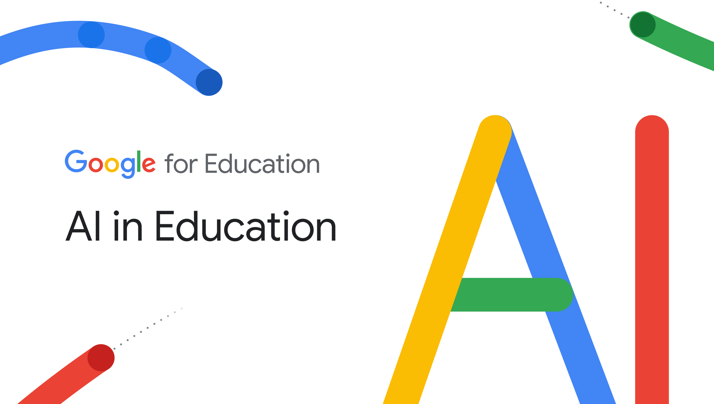
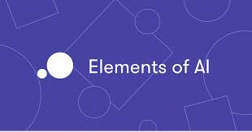
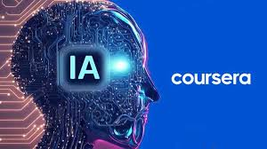

JN BLOG
La evolución de la inteligencia artificial: de los algoritmos básicos a los modelos generativos
Curso de IA de Google |
 |
“Elements of AI” – curso introductorio (gratuito y con certificado) |
 |
| Cursos de IA en Coursera o edX sobre Machine Learning y redes neuronales |
 |